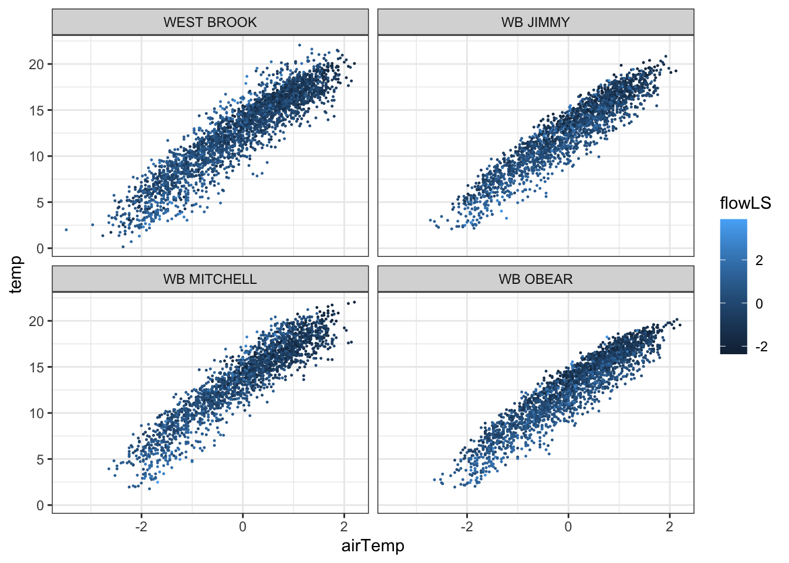
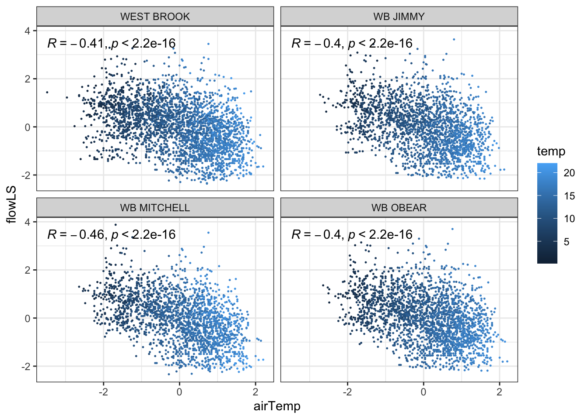
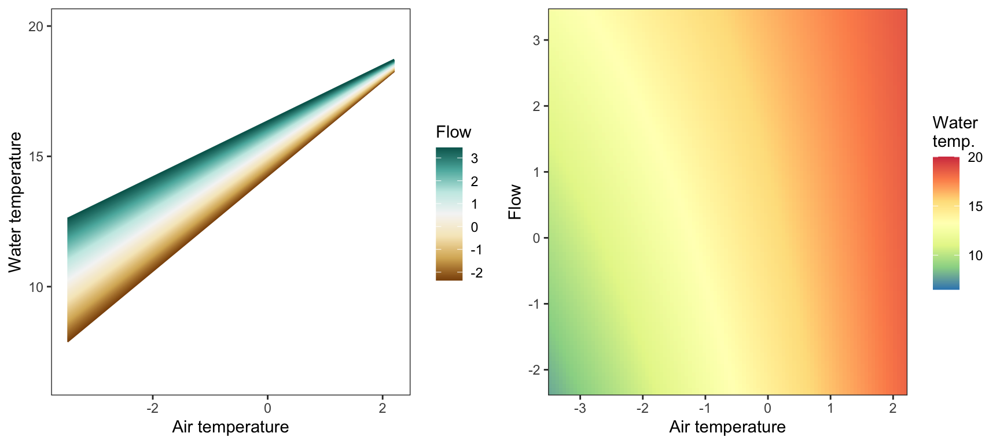
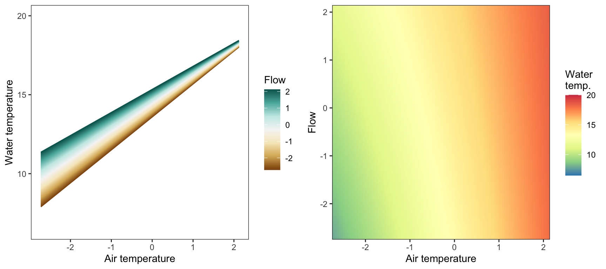
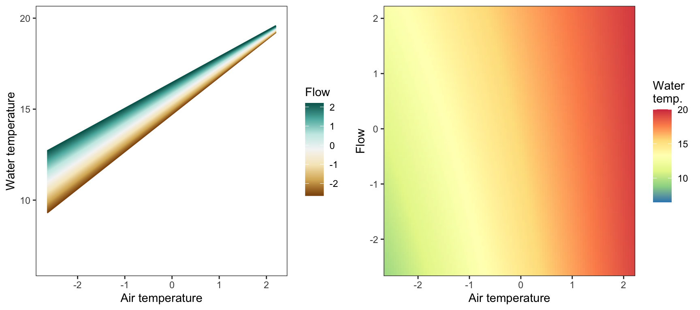
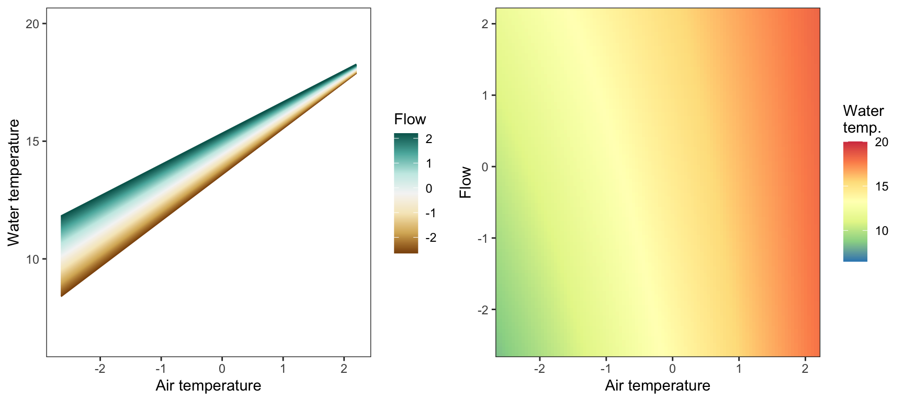
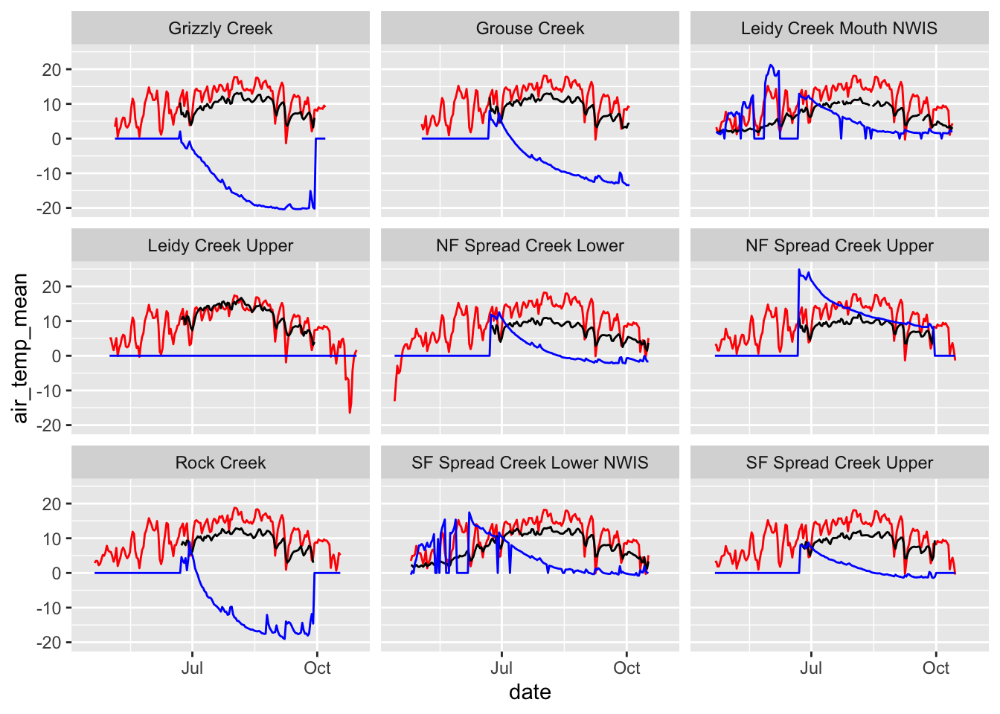
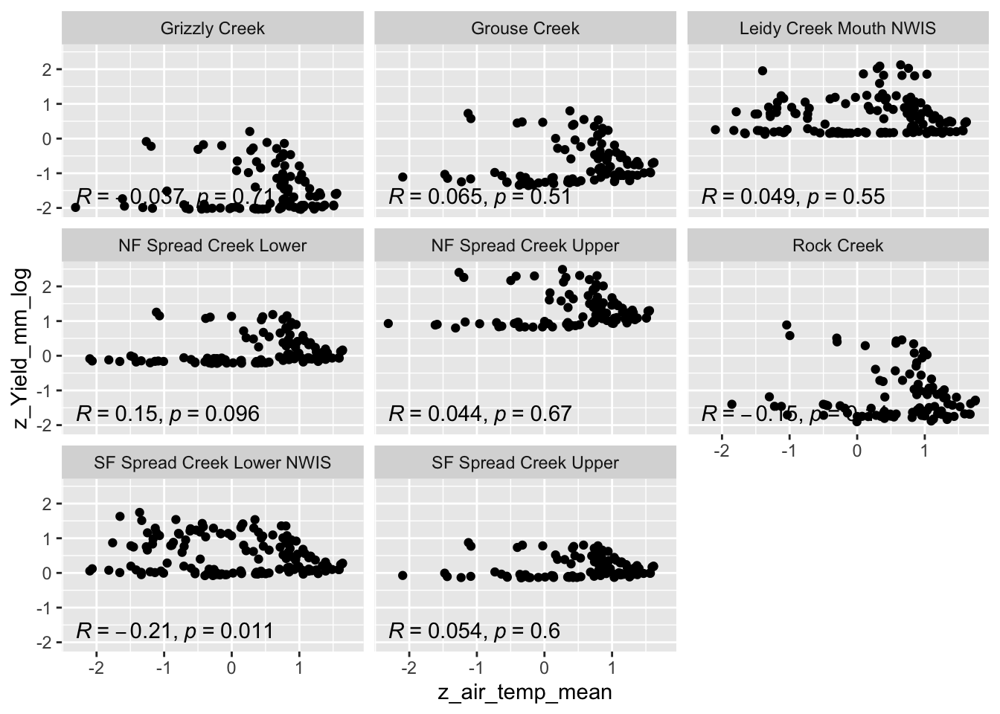

tempDataSyncS%>%ggplot(aes(x =airTemp, y =temp, color =flowLS))+geom_point(size =0.2)+facet_wrap(~riverOrdered)+theme_bw()

Code
tempDataSyncS%>%ggplot(aes(x =airTemp, y =flowLS, colour =temp))+geom_point(size =0.2)+facet_wrap(~riverOrdered)+theme_bw()+ggpubr::stat_cor()

5.1.2 Specify model
Straight from Letcher et al (2016)
Code
cat("model { ###----------------- LIKELIHOOD -----------------### # Days without an observation on the previous day (first observation in a series) # No autoregressive term for (i in 1:nFirstObsRows){ temp[firstObsRows[i]] ~ dnorm(stream.mu[firstObsRows[i]], pow(sigma, -2)) stream.mu[firstObsRows[i]] <- trend[firstObsRows[i]] trend[firstObsRows[i]] <- inprod(B.0[], X.0[firstObsRows[i], ]) + inprod(B.year[year[firstObsRows[i]], ], X.year[firstObsRows[i], ]) } # Days with an observation on the previous dat (all days following the first day) # Includes autoregressive term (ar1) for (i in 1:nEvalRows){ temp[evalRows[i]] ~ dnorm(stream.mu[evalRows[i]], pow(sigma, -2)) stream.mu[evalRows[i]] <- trend[evalRows[i]] + ar1[river[evalRows[i]]] * (temp[evalRows[i]-1] - trend[ evalRows[i]-1 ]) trend[evalRows[i]] <- inprod(B.0[], X.0[evalRows[i], ]) + inprod(B.year[year[evalRows[i]], ], X.year[evalRows[i], ]) } ###----------------- PRIORS ---------------------### # ar1, hierarchical by site for (i in 1:nRiver){ ar1[i] ~ dnorm(ar1Mean, pow(ar1SD,-2) ) T(-1,1) } ar1Mean ~ dunif( -1,1 ) ar1SD ~ dunif( 0, 2 ) # model variance sigma ~ dunif(0, 100) # fixed effect coefficients for (k in 1:K.0) { B.0[k] ~ dnorm(0, 0.001) } # YEAR EFFECTS # Priors for random effects of year for (t in 1:Ti) { # Ti years B.year[t, 1:L] ~ dmnorm(mu.year[ ], tau.B.year[ , ]) } mu.year[1] <- 0 for (l in 2:L) { mu.year[l] ~ dnorm(0, 0.0001) } # Prior on multivariate normal std deviation tau.B.year[1:L, 1:L] ~ dwish(W.year[ , ], df.year) df.year <- L + 1 sigma.B.year[1:L, 1:L] <- inverse(tau.B.year[ , ]) for (l in 1:L) { for (l.prime in 1:L) { rho.B.year[l, l.prime] <- sigma.B.year[l, l.prime]/sqrt(sigma.B.year[l, l]*sigma.B.year[l.prime, l.prime]) } sigma.b.year[l] <- sqrt(sigma.B.year[l, l]) } ###----------------- DERIVED VALUES -------------### residuals[1] <- 0 # hold the place. Not sure if this is necessary... for (i in 2:n) { residuals[i] <- temp[i] - stream.mu[i] } }", file ="DailyTempModelJAGS_Letcher.txt")
5.1.3 Organize objects
Get first observation indices and check that nFirstRowObs equals the number of unique site-years: must be TRUE!
Code
# row indices for first observation in each site-yearfirstObsRows<-unlist(tempDataSyncS%>%group_by(siteYear)%>%summarize(index =rowNum[min(which(!is.na(temp)))])%>%ungroup()%>%select(index))nFirstObsRows<-length(firstObsRows)# does the number of first observations match the number of site years?nFirstObsRows==length(unique(tempDataSyncS$siteYear))
# combine data in a listjags.data<-list("temp"=tempDataSyncS$temp,"nFirstObsRows"=nFirstObsRows,"firstObsRows"=firstObsRows,"nEvalRows"=nEvalRows,"evalRows"=evalRows,"X.0"=data.fixed,"X.year"=data.random.years,"K.0"=dim(data.fixed)[2],"nRiver"=length(unique(tempDataSyncS$site)),"Ti"=Ti,"L"=L,"W.year"=W.year,"n"=dim(tempDataSyncS)[1],"year"=as.factor(tempDataSyncS$year),"river"=as.factor(tempDataSyncS$riverOrdered))
top_mod<-fit0# generate MCMC samples and store as an arraymodelout<-top_mod$BUGSoutputMcmcList<-vector("list", length =dim(modelout$sims.array)[2])for(iin1:length(McmcList)){McmcList[[i]]=as.mcmc(modelout$sims.array[,i,])}# rbind MCMC samples from 10 chains Mcmcdat<-rbind(McmcList[[1]], McmcList[[2]], McmcList[[3]])param.summary<-modelout$summaryhead(param.summary)
# set upnp<-100myriv<-"WEST BROOK"x_temp<-seq(from =min(tempDataSyncS$airTemp[tempDataSyncS$riverOrdered==myriv]), to =max(tempDataSyncS$airTemp[tempDataSyncS$riverOrdered==myriv]), length.out =np)x_flow<-seq(from =min(tempDataSyncS$flowLS[tempDataSyncS$riverOrdered==myriv]), to =max(tempDataSyncS$flowLS[tempDataSyncS$riverOrdered==myriv]), length.out =np)pred_df<-expand_grid(x_temp, x_flow)# predict from modelpred_df$pred<-param.summary["B.0[1]",1]+param.summary["B.0[2]",1]*pred_df$x_temp+param.summary["B.0[5]",1]*pred_df$x_flow+param.summary["B.0[6]",1]*pred_df$x_temp*pred_df$x_flow# lines p1<-ggplot(pred_df, aes(x =x_temp, y =pred, color =x_flow, group =x_flow))+geom_line()+scale_color_distiller(palette ="BrBG", direction =+1)+theme_bw()+theme(panel.grid =element_blank())+labs(color ="Flow")+xlab("Air temperature")+ylab("Water temperature")+ylim(6.5,20)# heatmapp2<-ggplot(pred_df, aes(x =x_temp, y =x_flow))+geom_tile(aes(fill =pred))+scale_fill_distiller(palette ="Spectral", limits =c(6.5,20))+theme_bw()+theme(panel.grid =element_blank())+scale_x_continuous(expand =c(0,0))+scale_y_continuous(expand =c(0,0))+labs(fill ="Water\ntemp.")+xlab("Air temperature")+ylab("Flow")#+ #geom_point(data = tempDataSyncS %>% filter(riverOrdered == myriv), aes(x = airTemp, y = flowLS, color = temp)) +#scale_color_distiller(palette = "Spectral", limits = c(0,23)) # combineegg::ggarrange(p1, p2, nrow =1)

Code
# set upnp<-100myriv<-"WB JIMMY"x_temp<-seq(from =min(tempDataSyncS$airTemp[tempDataSyncS$riverOrdered==myriv]), to =max(tempDataSyncS$airTemp[tempDataSyncS$riverOrdered==myriv]), length.out =np)x_flow<-seq(from =min(tempDataSyncS$airTemp[tempDataSyncS$riverOrdered==myriv]), to =max(tempDataSyncS$airTemp[tempDataSyncS$riverOrdered==myriv]), length.out =np)pred_df<-expand_grid(x_temp, x_flow)# predict from modelpred_df$pred<-param.summary["B.0[1]",1]+param.summary["B.0[2]",1]*pred_df$x_temp+param.summary["B.0[5]",1]*pred_df$x_flow+param.summary["B.0[6]",1]*pred_df$x_temp*pred_df$x_flow+param.summary["B.0[7]",1]+param.summary["B.0[10]",1]*pred_df$x_temp# lines p1<-ggplot(pred_df, aes(x =x_temp, y =pred, color =x_flow, group =x_flow))+geom_line()+scale_color_distiller(palette ="BrBG", direction =+1)+theme_bw()+theme(panel.grid =element_blank())+labs(color ="Flow")+xlab("Air temperature")+ylab("Water temperature")+ylim(6.5,20)# heatmapp2<-ggplot(pred_df, aes(x =x_temp, y =x_flow))+geom_tile(aes(fill =pred))+scale_fill_distiller(palette ="Spectral", limits =c(6.5,20))+theme_bw()+theme(panel.grid =element_blank())+scale_x_continuous(expand =c(0,0))+scale_y_continuous(expand =c(0,0))+labs(fill ="Water\ntemp.")+xlab("Air temperature")+ylab("Flow")# combineegg::ggarrange(p1, p2, nrow =1)

Code
# set upnp<-100myriv<-"WB MITCHELL"x_temp<-seq(from =min(tempDataSyncS$airTemp[tempDataSyncS$riverOrdered==myriv]), to =max(tempDataSyncS$airTemp[tempDataSyncS$riverOrdered==myriv]), length.out =np)x_flow<-seq(from =min(tempDataSyncS$airTemp[tempDataSyncS$riverOrdered==myriv]), to =max(tempDataSyncS$airTemp[tempDataSyncS$riverOrdered==myriv]), length.out =np)pred_df<-expand_grid(x_temp, x_flow)# predict from modelpred_df$pred<-param.summary["B.0[1]",1]+param.summary["B.0[2]",1]*pred_df$x_temp+param.summary["B.0[5]",1]*pred_df$x_flow+param.summary["B.0[6]",1]*pred_df$x_temp*pred_df$x_flow+param.summary["B.0[8]",1]+param.summary["B.0[11]",1]*pred_df$x_temp# lines p1<-ggplot(pred_df, aes(x =x_temp, y =pred, color =x_flow, group =x_flow))+geom_line()+scale_color_distiller(palette ="BrBG", direction =+1)+theme_bw()+theme(panel.grid =element_blank())+labs(color ="Flow")+xlab("Air temperature")+ylab("Water temperature")+ylim(6.5,20)# heatmapp2<-ggplot(pred_df, aes(x =x_temp, y =x_flow))+geom_tile(aes(fill =pred))+scale_fill_distiller(palette ="Spectral", limits =c(6.5,20))+theme_bw()+theme(panel.grid =element_blank())+scale_x_continuous(expand =c(0,0))+scale_y_continuous(expand =c(0,0))+labs(fill ="Water\ntemp.")+xlab("Air temperature")+ylab("Flow")# combineegg::ggarrange(p1, p2, nrow =1)

Code
# set upnp<-100myriv<-"WB OBEAR"x_temp<-seq(from =min(tempDataSyncS$airTemp[tempDataSyncS$riverOrdered==myriv]), to =max(tempDataSyncS$airTemp[tempDataSyncS$riverOrdered==myriv]), length.out =np)x_flow<-seq(from =min(tempDataSyncS$airTemp[tempDataSyncS$riverOrdered==myriv]), to =max(tempDataSyncS$airTemp[tempDataSyncS$riverOrdered==myriv]), length.out =np)pred_df<-expand_grid(x_temp, x_flow)# predict from modelpred_df$pred<-param.summary["B.0[1]",1]+param.summary["B.0[2]",1]*pred_df$x_temp+param.summary["B.0[5]",1]*pred_df$x_flow+param.summary["B.0[6]",1]*pred_df$x_temp*pred_df$x_flow+param.summary["B.0[9]",1]+param.summary["B.0[12]",1]*pred_df$x_temp# lines p1<-ggplot(pred_df, aes(x =x_temp, y =pred, color =x_flow, group =x_flow))+geom_line()+scale_color_distiller(palette ="BrBG", direction =+1)+theme_bw()+theme(panel.grid =element_blank())+labs(color ="Flow")+xlab("Air temperature")+ylab("Water temperature")+ylim(6.5,20)# heatmapp2<-ggplot(pred_df, aes(x =x_temp, y =x_flow))+geom_tile(aes(fill =pred))+scale_fill_distiller(palette ="Spectral", limits =c(6.5,20))+theme_bw()+theme(panel.grid =element_blank())+scale_x_continuous(expand =c(0,0))+scale_y_continuous(expand =c(0,0))+labs(fill ="Water\ntemp.")+xlab("Air temperature")+ylab("Flow")# combineegg::ggarrange(p1, p2, nrow =1)

5.2 Load data
Restrict to West Brook, and standardize flow by site (not sure we actually want to do this, but for just for now, to repeat Ben’s work). Also set flow = NA to 0. Probably should change this to latent variable in model, especially when expanding to sites where flow data is more rare
ggpubr::ggarrange(dat%>%ggplot(aes(x =air_temp_mean, color =site_name))+geom_density()+theme_bw(),dat%>%ggplot(aes(x =flow_mean_log, color =site_name))+geom_density()+theme_bw(),dat%>%ggplot(aes(x =Yield_mm_log, color =site_name))+geom_density()+theme_bw(), common.legend =TRUE, legend ="right", ncol =1)
Code
dat%>%ggplot()+geom_line(aes(date, air_temp_mean), color ="red")+geom_line(aes(date, tempc_mean))+geom_line(aes(date, z_Yield_mm_log*10), color ='blue')+facet_wrap(~site_name)

Code
dat%>%filter(z_Yield_mm_log!=0)%>%ggplot(aes(x =z_air_temp_mean, y =z_Yield_mm_log))+geom_point()+ggpubr::stat_cor(method ="pearson", label.x.npc =0, label.y.npc =0.1)+facet_wrap(~site_name)

5.3 Specify JAGS model
Specify model following Letcher et al. (2016). MODIFIED
Code
cat("model { ###----------------- LIKELIHOOD -----------------### # Days without an observation on the previous day (first observation in a series) # No autoregressive term for (i in 1:n){ temp[i] ~ dnorm(stream.mu[i], pow(sigma, -2)) stream.mu[i] <- trend[i] trend[i] <- inprod(B.site[site[i], ], X.site[i, ]) #flow[firstObsRows[i]] ~ dnorm(0, pow(10, -2)) } # for (i in 1:nFirstObsRows){ # temp[firstObsRows[i]] ~ dnorm(stream.mu[firstObsRows[i]], pow(sigma, -2)) # stream.mu[firstObsRows[i]] <- trend[firstObsRows[i]] # trend[firstObsRows[i]] <- inprod(B.0[], X.0[firstObsRows[i], ]) + inprod(B.site[site[firstObsRows[i]], ], X.site[firstObsRows[i], ]) #+ inprod(B.year[year[firstObsRows[i]], ], X.year[firstObsRows[i], ]) # # #flow[firstObsRows[i]] ~ dnorm(0, pow(10, -2)) # } # # # Days with an observation on the previous dat (all days following the first day) # # Includes autoregressive term (ar1) # # for (i in 1:nEvalRows){ # temp[evalRows[i]] ~ dnorm(stream.mu[evalRows[i]], pow(sigma, -2)) # stream.mu[evalRows[i]] <- trend[evalRows[i]] + ar1[site[evalRows[i]]] * (temp[evalRows[i]-1] - trend[ evalRows[i]-1 ]) # trend[evalRows[i]] <- inprod(B.0[], X.0[evalRows[i], ]) + inprod(B.site[site[evalRows[i]], ], X.site[evalRows[i], ]) #+ inprod(B.year[year[evalRows[i]], ], X.year[evalRows[i], ]) # # #flow[evalRows[i]] ~ dnorm(0, pow(10, -2)) # } ###----------------- PRIORS ---------------------### # # ar1, hierarchical by site # for (i in 1:nSite){ # ar1[i] ~ dnorm(ar1Mean, pow(ar1SD,-2) ) T(-1,1) # } # ar1Mean ~ dunif( -1,1 ) # ar1SD ~ dunif( 0, 2 ) # model variance sigma ~ dunif(0, 100) # fixed effect coefficients for (k in 1:nFixedCovs) { B.0[k] ~ dnorm(0, pow(100, -2)) } # SITE EFFECTS for (k in 1:nRandCovs) { for (i in 1:nSite) { B.site[i,k] ~ dnorm(0, pow(10, -2)) } } # # YEAR EFFECTS # # Priors for random effects of year # for (t in 1:Ti) { # Ti years # B.year[t, 1:L] ~ dmnorm(mu.year[ ], tau.B.year[ , ]) # } # # mu.year[1] <- 0 # # for (l in 2:L) { # mu.year[l] ~ dnorm(0, 0.0001) # } # # # Prior on multivariate normal std deviation # tau.B.year[1:L, 1:L] ~ dwish(W.year[ , ], df.year) # df.year <- L + 1 # sigma.B.year[1:L, 1:L] <- inverse(tau.B.year[ , ]) # for (l in 1:L) { # for (l.prime in 1:L) { # rho.B.year[l, l.prime] <- sigma.B.year[l, l.prime]/sqrt(sigma.B.year[l, l]*sigma.B.year[l.prime, l.prime]) # } # sigma.b.year[l] <- sqrt(sigma.B.year[l, l]) # } ###----------------- DERIVED VALUES -------------### # residuals # residuals[1] <- 0 # hold the place. Not sure if this is necessary... for (i in 1:n) { residuals[i] <- temp[i] - stream.mu[i] } # variance of model predictions (fixed + random effects) var_fit <- (sd(stream.mu))^2 # residual variance var_res <- (sd(residuals))^2 # calculate Bayesian R^2 R2 <- var_fit / (var_fit + var_res) # Root mean squared error rmse <- sqrt(mean(residuals[]^2)) }", file ="DailyTempModelJAGS_mod.txt")
Straight from Letcher et al (2016)
Code
cat("model { ###----------------- LIKELIHOOD -----------------### # Days without an observation on the previous day (first observation in a series) # No autoregressive term for (i in 1:nFirstObsRows){ temp[firstObsRows[i]] ~ dnorm(stream.mu[firstObsRows[i]], pow(sigma, -2)) stream.mu[firstObsRows[i]] <- trend[firstObsRows[i]] trend[firstObsRows[i]] <- inprod(B.0[], X.0[firstObsRows[i], ]) + inprod(B.year[year[firstObsRows[i]], ], X.year[firstObsRows[i], ]) } # Days with an observation on the previous dat (all days following the first day) # Includes autoregressive term (ar1) for (i in 1:nEvalRows){ temp[evalRows[i]] ~ dnorm(stream.mu[evalRows[i]], pow(sigma, -2)) stream.mu[evalRows[i]] <- trend[evalRows[i]] + ar1[river[evalRows[i]]] * (temp[evalRows[i]-1] - trend[ evalRows[i]-1 ]) trend[evalRows[i]] <- inprod(B.0[], X.0[evalRows[i], ]) + inprod(B.year[year[evalRows[i]], ], X.year[evalRows[i], ]) } ###----------------- PRIORS ---------------------### # ar1, hierarchical by site for (i in 1:nRiver){ ar1[i] ~ dnorm(ar1Mean, pow(ar1SD,-2) ) T(-1,1) } ar1Mean ~ dunif( -1,1 ) ar1SD ~ dunif( 0, 2 ) # model variance sigma ~ dunif(0, 100) # fixed effect coefficients for (k in 1:K.0) { B.0[k] ~ dnorm(0, 0.001) } # YEAR EFFECTS # Priors for random effects of year for (t in 1:Ti) { # Ti years B.year[t, 1:L] ~ dmnorm(mu.year[ ], tau.B.year[ , ]) } mu.year[1] <- 0 for (l in 2:L) { mu.year[l] ~ dnorm(0, 0.0001) } # Prior on multivariate normal std deviation tau.B.year[1:L, 1:L] ~ dwish(W.year[ , ], df.year) df.year <- L + 1 sigma.B.year[1:L, 1:L] <- inverse(tau.B.year[ , ]) for (l in 1:L) { for (l.prime in 1:L) { rho.B.year[l, l.prime] <- sigma.B.year[l, l.prime]/sqrt(sigma.B.year[l, l]*sigma.B.year[l.prime, l.prime]) } sigma.b.year[l] <- sqrt(sigma.B.year[l, l]) } ###----------------- DERIVED VALUES -------------### residuals[1] <- 0 # hold the place. Not sure if this is necessary... for (i in 2:n) { residuals[i] <- temp[i] - stream.mu[i] } }", file ="DailyTempModelJAGS_Letcher.txt")
5.4 Organize objects
Get first observation indices and check that nFirstRowObs equals the number of unique site-years: must be TRUE!
Code
# row indices for first observation in each site-yearfirstObsRows<-unlist(dat%>%group_by(siteYear)%>%summarize(index =rowNum[min(which(!is.na(tempc_mean)))])%>%ungroup()%>%select(index))nFirstObsRows<-length(firstObsRows)# does the number of first observations match the number of site years?nFirstObsRows==length(unique(dat$siteYear))
# fixed effectsdata.fixed<-data.frame(intercept =1,# air temperature airTemp =dat$air_temp_mean, airTempLag1 =dat$air_temp_mean_lag1, airTempLag2 =dat$air_temp_mean_lag2,# flow flow =dat$z_Yield_mm_log,# air temp x flow interaction airFlow =dat$air_temp_mean*dat$z_Yield_mm_log)# random site effects# data.random.sites <- data.frame(intercept.site = 1,# airTemp = dat$air_temp_mean)data.random.sites<-data.frame(intercept.site =1, air =dat$z_air_temp_mean, flow =dat$z_Yield_mm_log, airflow =dat$z_air_temp_mean*dat$z_Yield_mm_log)# random year effectsdata.random.years<-data.frame(intercept.year =1, doy =dat$yday, doy2 =dat$yday^2, doy3 =dat$yday^3)Ti<-length(unique(dat$year))L<-dim(data.random.years)[2]W.year<-diag(L)# combine data in a listjags.data<-list("temp"=dat$tempc_mean,"nFirstObsRows"=nFirstObsRows,"firstObsRows"=firstObsRows,"nEvalRows"=nEvalRows,"evalRows"=evalRows,"X.0"=data.fixed,"X.site"=data.random.sites,"X.year"=data.random.years,"nFixedCovs"=dim(data.fixed)[2],"nRandCovs"=dim(data.random.sites)[2],"site"=dat$site_code,"year"=dat$year_code,"nSite"=length(unique(dat$site_code)),"Ti"=Ti,"L"=L,"W.year"=W.year,"n"=dim(dat)[1])
Compiling model graph
Resolving undeclared variables
Allocating nodes
Graph information:
Observed stochastic nodes: 1066
Unobserved stochastic nodes: 547
Total graph size: 14190
Initializing model
Get MCMC samples and summary
Code
top_mod<-fit2# generate MCMC samples and store as an arraymodelout<-top_mod$BUGSoutputMcmcList<-vector("list", length =dim(modelout$sims.array)[2])for(iin1:length(McmcList)){McmcList[[i]]=as.mcmc(modelout$sims.array[,i,])}# rbind MCMC samples from 10 chains Mcmcdat<-rbind(McmcList[[1]], McmcList[[2]], McmcList[[3]])param.summary<-modelout$summaryhead(param.summary)